MODELING / PORTRAIT SESSION
IO Studio Portraits
A professional portrait series moving between quiet, editorial poses and open, candid expressions.
All photographs are raw originals. Photography, hair, and makeup by IO Studio.
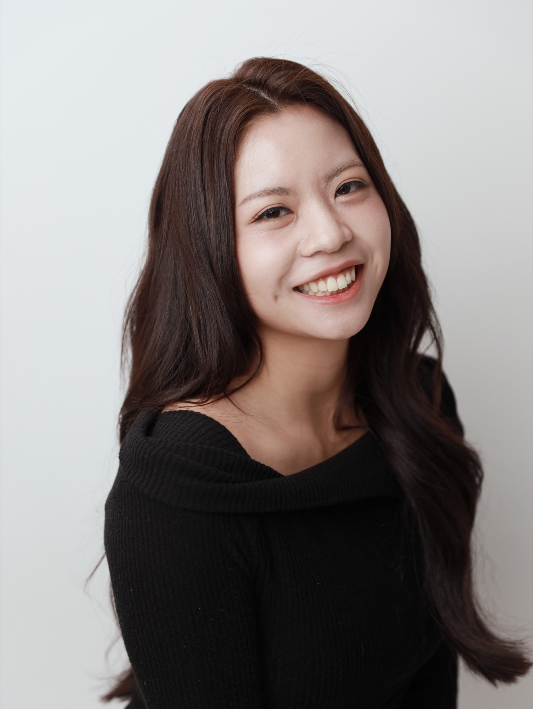
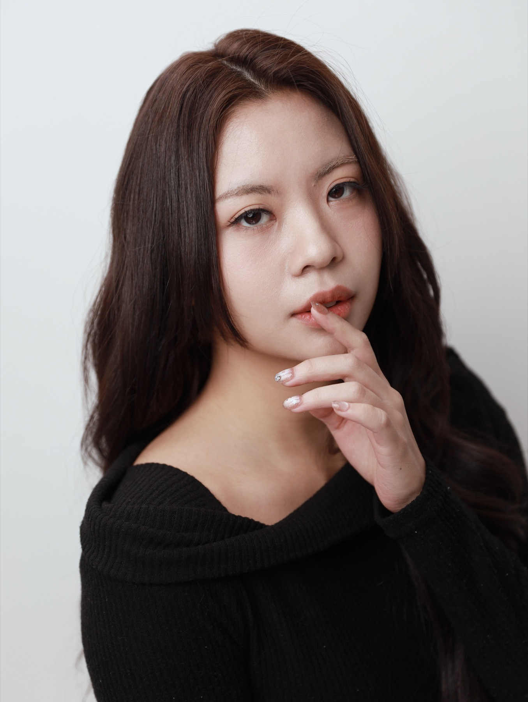
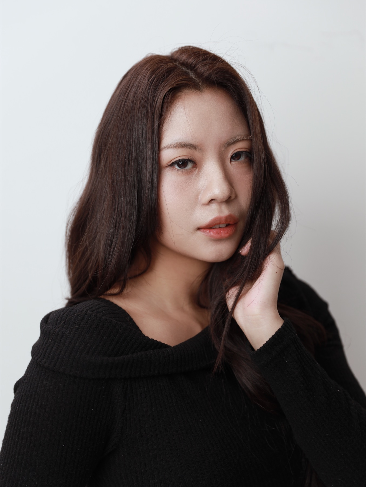
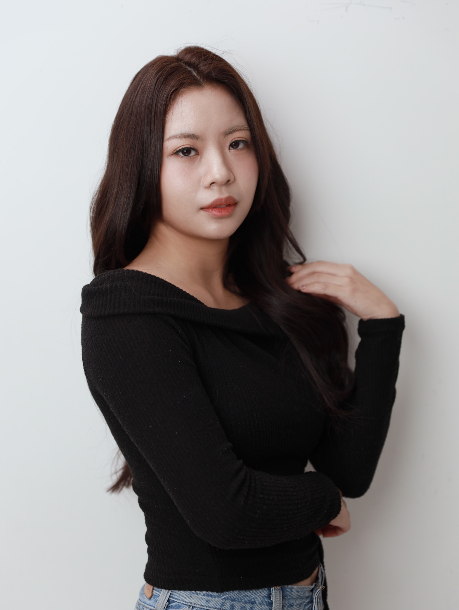
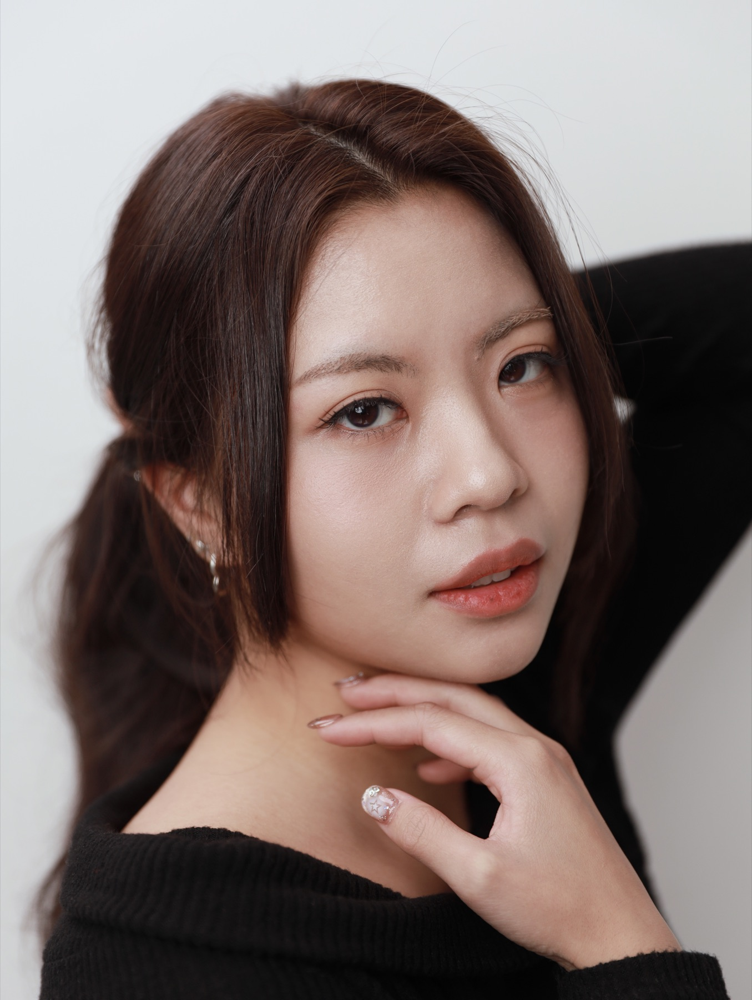
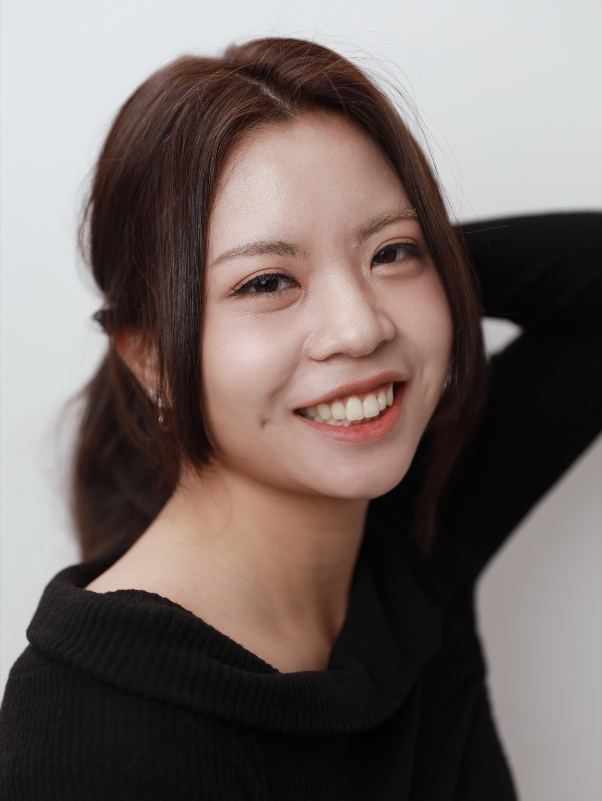
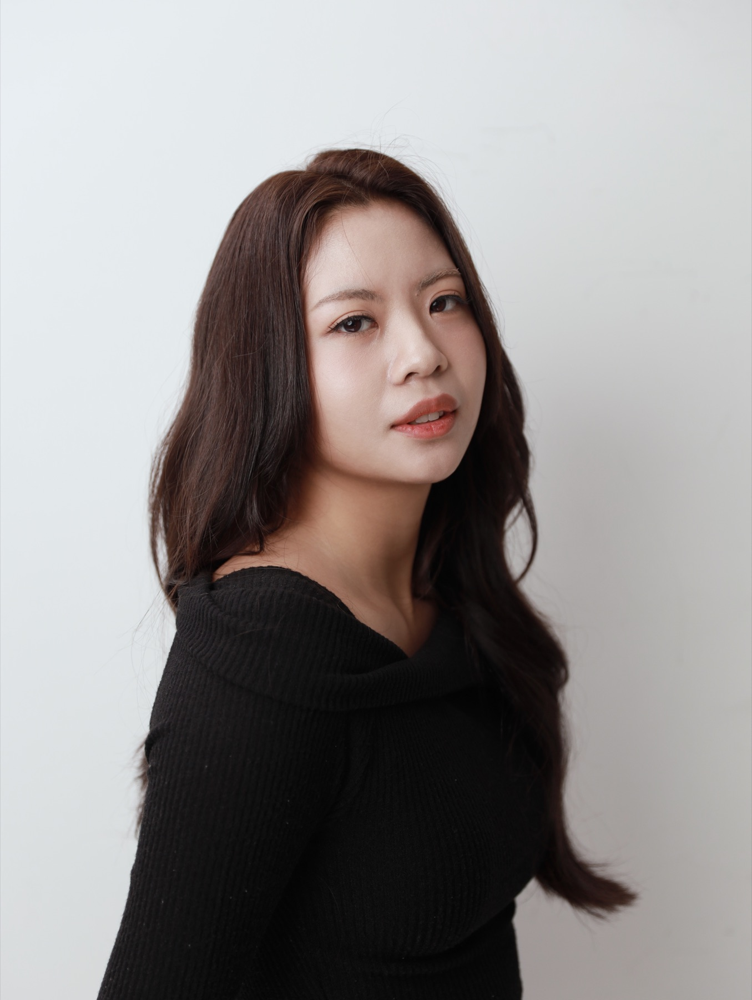
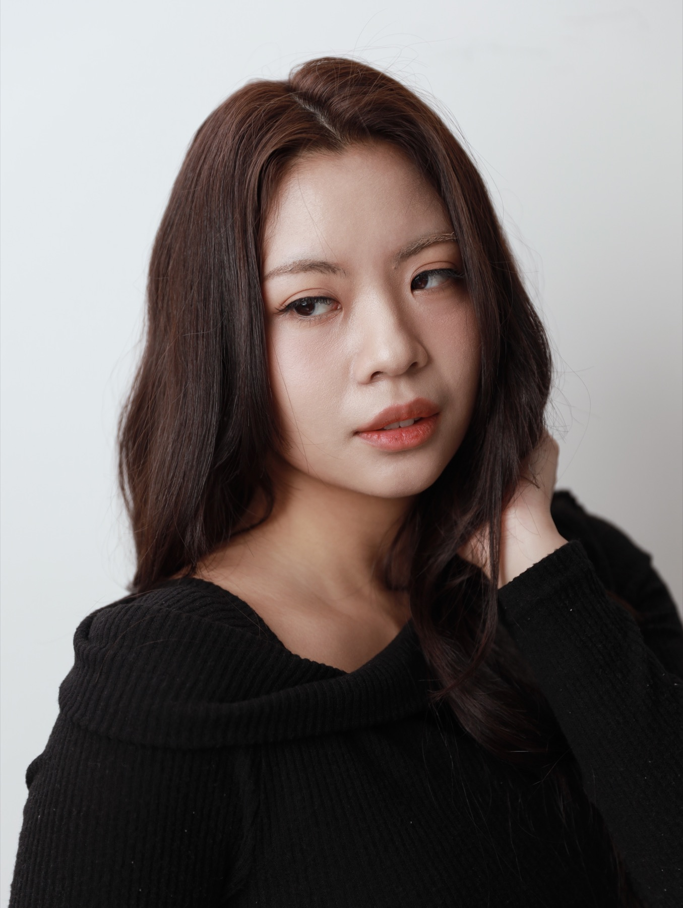
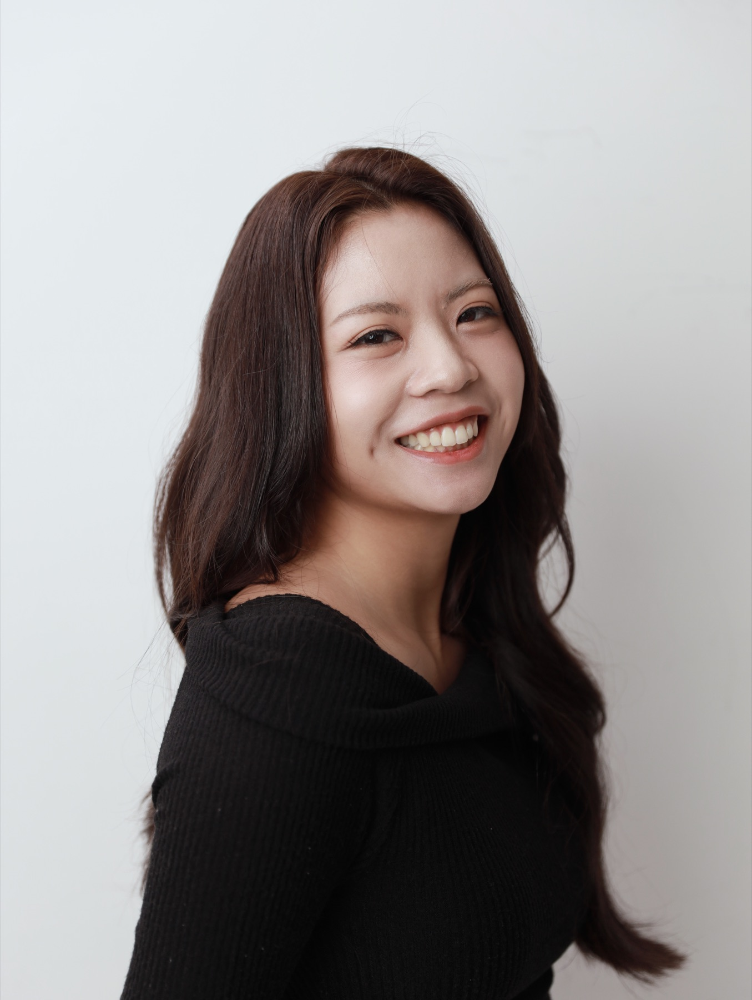
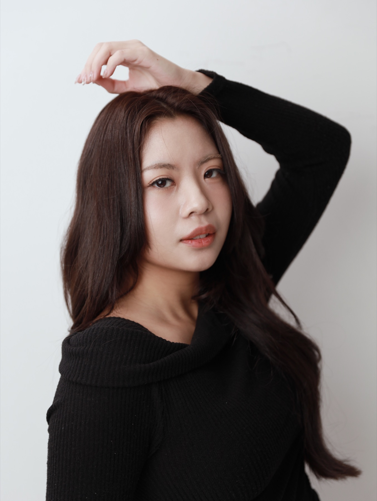
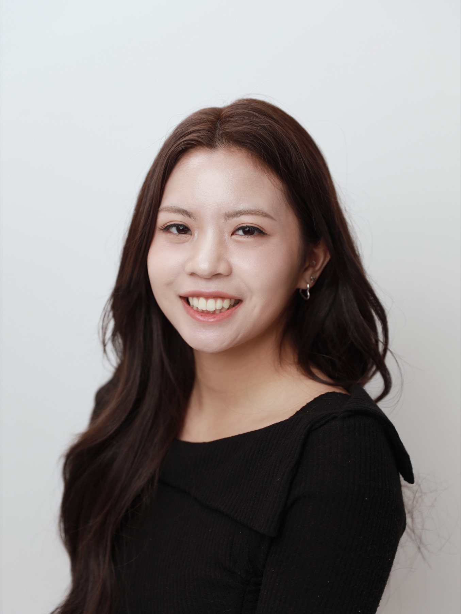
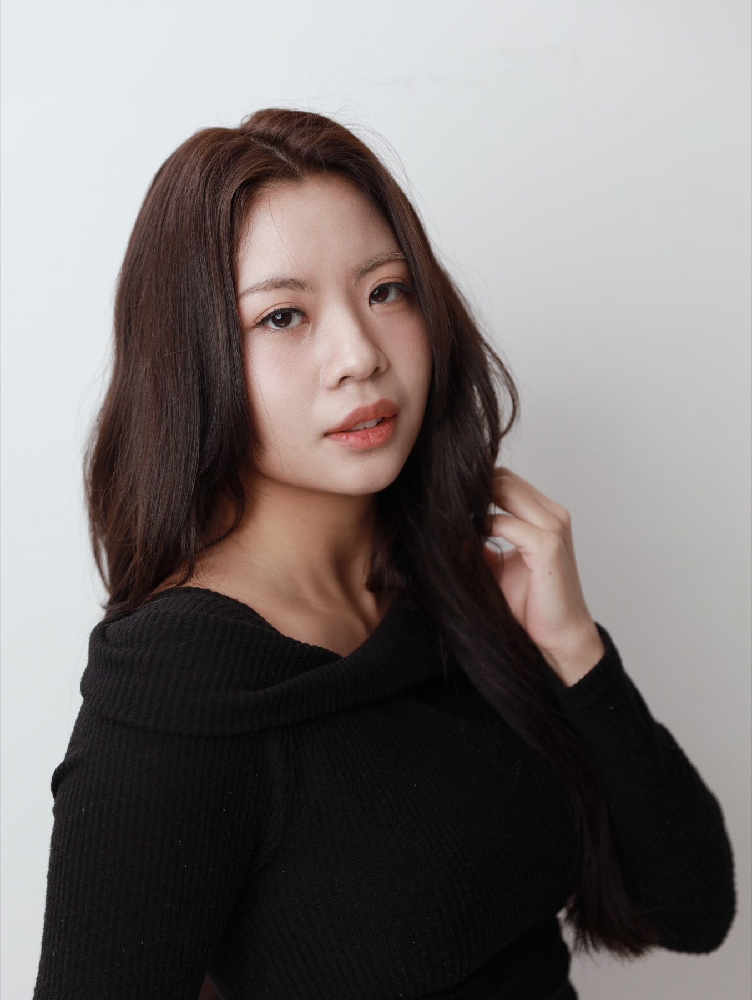
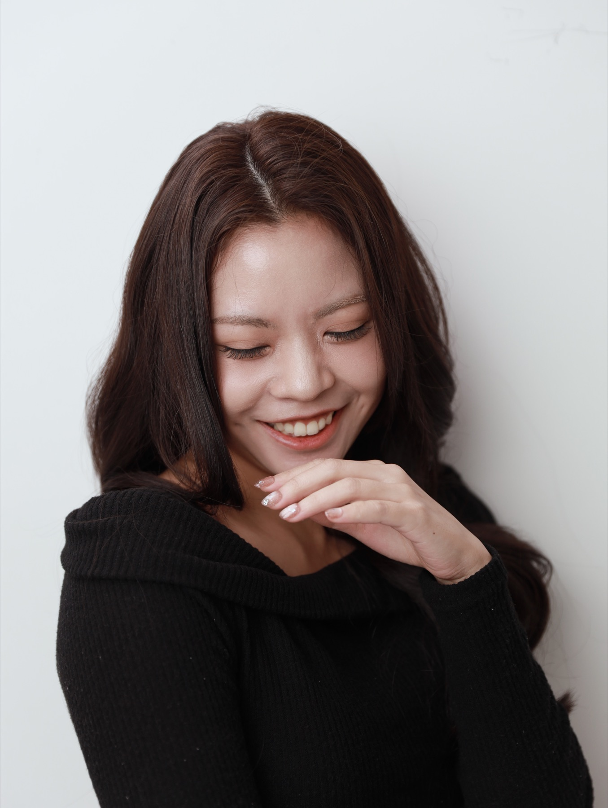